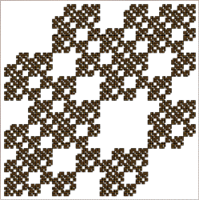
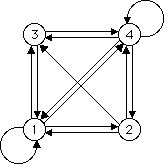

IFS with Memory
Romes and IFS without memory


Both these examples have romes: 1 and 4 on the left, 1 and 2 on the right. Both can be constructed by IFS without memory. Click each picture to see how.
Return to
Romes
.